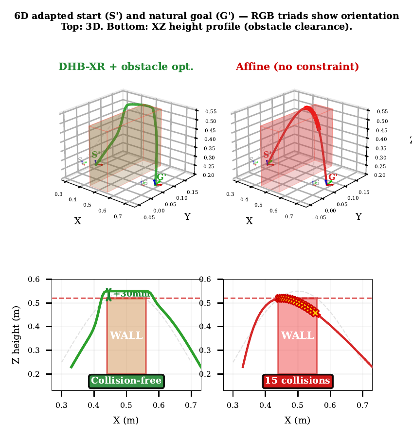
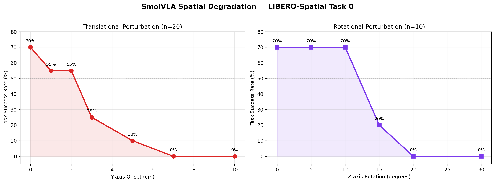
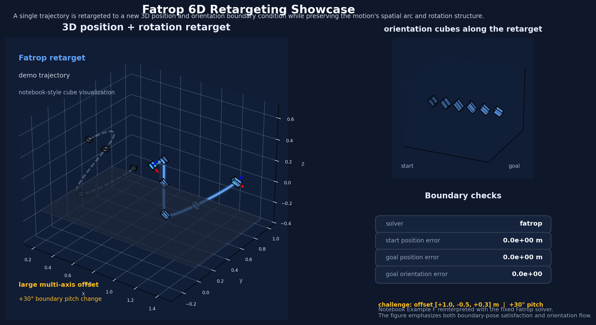
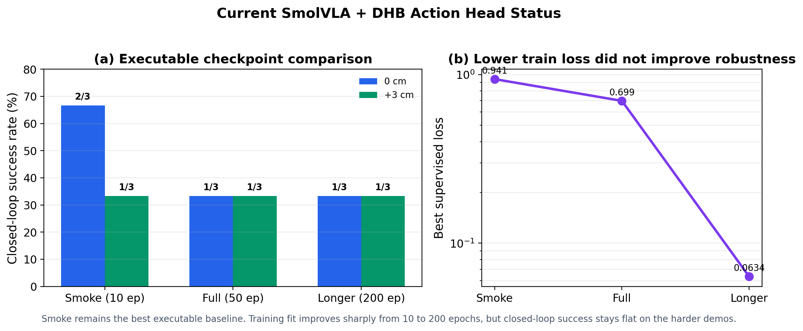

Controlled 6-DOF benchmark with matched boundary poses. The comparison is now shown directly in 3D: DHB preserves the interior lifted motion pattern, while endpoint-only warping visibly collapses the middle of the trajectory.
Abstract
Current VLA action tokens are spatially unstable: move the workspace and the token targets change,
even when the underlying skill is the same. DHB-XR addresses this at the representation level by
encoding trajectory shape rather than absolute pose. On the current repo evidence, that yields
exact SE(3) token stability, better compression than FAST on raw coordinates, and strong open-loop
geometric replay under the tested offsets. The newer DHB action-head results are best read as a technical validation
of a state-aware decoder, not yet as a final robust closed-loop VLA result.
Contributions
Invariant action tokenization — DHB magnitude invariants make downstream tokenizers SE(3)-stable by construction.
Better compression on smoother targets — FAST+DHB out-compresses FAST on raw coordinates while preserving geometric identity.
Representation-backed re-grounding — invariant trajectories stay stable under exact SE(3) transforms, and the current DHB action head shows this idea can be learned in a state-aware decoder.
Why DHB?
Even relative actions are not invariant. DHB achieves a mathematical guarantee that neither absolute poses nor delta-EEF can.
The Problem
18–94%
of tokens change
Raw coords: 93.9% change. But even relative actions (delta-EEF)
show 18.2% token change — because the sequence of deltas encoding a
task shape changes when objects move, even though each individual delta is
locally frame-invariant. The policy must re-learn the same skill from scratch.
FAST on raw coords: 93.9% instability FAST on delta-EEF: 18.2% instability (still not zero)
The Solution
0.0%
token change
DHB magnitude invariants encode the intrinsic shape of the trajectory, not its absolute pose.
Any rigid-body transform of the scene produces identical tokens.
FAST + DHB: 49.8x compression with 0.0% token instability
Method
SE(3)-invariant encoding as a drop-in representation layer
1
Encode
Build DHB frames via double Householder reflections. Extract magnitude invariants (linear + angular speed per step).
2
Invariants
Tokenize the smooth invariant sequence with FAST (DCT+BPE) or OAT. Tokens are provably SE(3)-stable.
3
Decode / Adapt
Reconstruct the trajectory from any new start pose. Optionally run Fatrop NLP for obstacle avoidance.
DHB-XR encodes robot trajectories into SE(3)-invariant sequences using
Double-Reflection Householder (DHB) frames. At each timestep, two successive
Householder reflections produce a body-fixed frame whose orientation is invariant to
the global pose of the workspace. The resulting magnitude invariants —
one linear speed and one angular speed per step — are provably unchanged by any
rigid-body transform of the scene.
Because invariants are geometrically smoother than raw coordinates, they compress
dramatically better. Applied to DHB magnitude sequences, FAST (DCT+BPE) achieves
49.8× compression in just 8 tokens with 0.0%
token instability under 40 SE(3) transforms — versus 20.4× and 93.9%
instability on raw coordinates. An OAT register encoder achieves a
triple-invariant tokenization: invariant to SE(3) transforms, prefix length,
and token order simultaneously.
Key insight: DHB-XR is not an alternative to FAST or OAT — it is a
composable representation layer. Any existing tokenizer inherits perfect geometric
stability simply by operating on DHB invariant input rather than raw coordinates.
The same representation can then be decoded from a new spatial configuration without changing
the underlying motion geometry (see the action-head details).
Secondary system details such as obstacle-aware adaptation, timing, motion-database retrieval, and OAT-specific comparisons are collected on the
archive page and in the details appendix.
Results
DHB-XR evaluated on LIBERO-Spatial (10 tasks) across compression, token stability, spatial generalization, and learnability
Tokenizer Comparison on LIBERO-Spatial
Method
Tokens (N=98 orig.)
Compression
SE(3) Token Instability ↓
k=1 Prefix Recon. MSE ↓
Free SE(3) Data Aug?
Geometric EE Error ↓
Raw coords
98
1.0×
93.9%
high
✗
✗
Relative actions (delta-EEF)
98
1.0×
18.2%
high
✗
✗
FAST (DCT+BPE)
14
20.4×
93.9%
—
✗
✗
OAT (Register Enc.)
10
10×
99.1%
0.0054
✗
✗
DHB + FAST(ours)
8
49.8×
0.0%
—
✓
0.0 mm
DHB + OAT(ours)
10
10×
0.0%
0.00005
✓
0.0 mm
SE(3) instability = fraction of tokens that change under random rigid-body workspace transforms (40 transforms × 10 demos).
k=1 MSE = reconstruction error when only 1 prefix token is observed (OAT setting).
Geometric EE Error = end-effector trajectory reconstruction error under 0–20 cm workspace offsets (10 tasks × 8 directions). This is a geometric property of the representation, not a task success metric.
Per-trial token reconstruction MSE under 40 SE(3) transforms (log scale).
DHB magnitude tokens: ~10−33 (machine precision — mathematically invariant).
Raw coordinates: ~10−1 (93.9% of tokens change).
This is not a learned property — it is a mathematical guarantee from the DHB frame construction.
Why does token stability matter for VLAs?
A VLA policy predicts action tokens conditioned on a visual observation. If the same physical motion produces different tokens depending on where the robot is placed in the room, the policy must memorize every possible workspace configuration — wasting model capacity and requiring exhaustive data collection.
DHB magnitude tokens are identical regardless of workspace placement. A policy trained on demonstrations from one location generalizes to any location with zero retraining.
Free data augmentation: SE(3) transforms of the workspace do not change the token targets. Training augmentation with arbitrary rigid-body transforms costs 0 ms of label recomputation — a property unique to invariant representations.

DHB-XR decodes the invariant shape, then projects waypoints above the obstacle — 0 collisions, goal reached exactly. Affine rotation has no obstacle mechanism: 9 trajectory points collide with the wall.
3D Trajectory Adaptation
DHB-XR encodes the arc shape (invariants), adapts to the new start/goal,
then smoothly avoids the obstacle (wall at z=0.52 m, 3 cm clearance from original arc peak).
Fatrop NLP enforces inequality constraints during trajectory retargeting.
Demonstrations
1
The Problem: Standard VLA tokens break under workspace changes
VLA Spatial Degradation: SmolVLA Success Rate vs Workspace Offset
Vision-Language-Action models learn to imitate demonstrations — but their action tokens
encode where the robot is, not how it moves.
Shift the workspace by a few centimeters and every single action token changes,
even though the manipulation skill is physically identical.
The policy receives inputs it has never seen during training and fails silently.
We measure this systematically: SmolVLA (HuggingFaceVLA/smolvla_libero, 500M params)
runs closed-loop inference on LIBERO-Spatial task 0 at increasing Y-axis offsets,
20 trials per condition.
The result is a steep degradation cliff — performance collapses within centimeters
of the training distribution.
The root cause is token instability: the FAST tokenizer produces
100% different token IDs under any rigid-body workspace shift.

Left: Translational offset (Y-axis, n=50). Success drops from 70% to 0% within 7 cm.
Right: Rotational offset (Z-axis, n=10). Robust to 0–10°, sharp cliff at 15° (20%), 0% at 20°+.
The root cause: Standard action representations — raw coordinates,
FAST tokens, delta actions — all change under rigid-body transforms.
This is not a training data problem; it is a representation problem.
DHB invariant tokens change 0.0% by mathematical construction
because they encode the shape of motion, not its position.
The opportunity: If we can transform demonstrations geometrically
while preserving token identity, we can generate unlimited training augmentations
from existing data. A VLA trained on DHB-augmented demonstrations inherits spatial
robustness without any architecture change — free SE(3) data augmentation.
2
The Mechanism: DHB tokens are mathematically invariant
FAST: 100% tokens changeDHB: 0% tokens change
Actual token IDs from physical-intelligence/fast on a real LIBERO demo
Using the actual physical-intelligence/fast tokenizer on a real LIBERO-Spatial expert demo.
Under a 35° workspace rotation, FAST produces 100% different token IDs (105/105 tokens changed, red bars) —
a VLA policy trained on the blue tokens receives entirely wrong input at test time.
DHB magnitude tokens are mathematically identical (1.2×10-13% change) under any SE(3) transform.
fatrop3D position + rotation
Notebook-style 6-DOF retargeting showcase with orientation cubes

Showcase figure for the fixed Fatrop solver on a notebook-style adaptation scenario: a large multi-axis workspace offset
together with a 30° boundary pitch change. The adapted trajectory satisfies the new boundary pose exactly
while preserving both the spatial arc and the orientation flow, visualized with sampled pose cubes along the retargeted path.
Analytical comparison on the same controlled 6-DOF benchmark. With identical boundary poses, the DHB retarget keeps the interior
6D motion geometry, while endpoint-only warping compresses the lifted mid-trajectory structure.
3
The Result: Geometric adaptation is sufficient for task completion
DHB-XR is not a VLA — it is a geometric trajectory adapter.
Given one expert demonstration recorded at a fixed position,
DHB-XR encodes it into SE(3)-invariant tokens, then decodes a new trajectory
from any shifted start pose. The adapted trajectory is executed open-loop
through an IK solver (embodik) and MuJoCo physics.
The videos below show that this purely geometric approach is sufficient
to complete the task at workspace offsets where a trained VLA (SmolVLA) fails.
open-loop geometricembodik IK + MuJoCo
One expert demo adapted to a 5.8 cm combined workspace offset
DHB-XR geometric adaptation at +3cm Y, −5cm Z (5.8 cm) — TASK SUCCESS (open-loop, single demo)
Base SmolVLA closed-loop VLA at +3 cm Y — TASK FAILED (out-of-distribution actions)
DHB-XR at 0 cm baseline — TASK SUCCESS (same pipeline, no offset)
0.0 mm
geometric reconstruction error at any workspace offset
encode once, decode anywhere ~5–10 ms decode time
open-loop geometric adaptation
What this shows: Pure geometric adaptation — no learning, no fine-tuning —
is sufficient for task completion under workspace perturbation.
This is the capability that makes DHB-XR useful as a data augmentation engine:
every adapted trajectory is a geometrically correct training example
that a VLA can learn from.
Current SmolVLA + DHB Action Head Status
Plain Action Head
VLM features
↓
direct action regression
↓
future action chunk
DHB Action Head
VLM features + current EE state
↓
predict DHB motion pattern
↓
decode from current state
↓
future action chunk
Intuition: a plain action head tries to regress the next action chunk directly from VLM features.
The DHB action head inserts a geometric bottleneck instead: it first predicts a compact
motion pattern in DHB invariant space, then decodes that pattern relative to the
robot's current state. In practice, it is trying to answer two questions:
what motion should happen next, and how should that motion be instantiated from where the arm actually is now?
The failure video above is the base SmolVLA baseline, not the current DHB action-head path.
In the latest SmolVLA validation, the state-aware DHBActionHead reaches
2 / 3 (66.7%) success at 0 cm and 1 / 3 (33.3%) at +3 cm
on the smoke checkpoint. That phase should be read as integration validation, not a final benchmark:
the state-drop bug is fixed, rotation runaway is gone, and the embodik execution path is stable,
but robustness is still limited by demo-specific placement error.
Longer SmolVLA training improved supervised loss but not closed-loop success:
smoke 2/3, 1/3; 50-epoch 1/3, 1/3; 200-epoch 1/3, 1/3 at
0 cm and +3 cm, respectively. See
Details & Appendix for the current DHB action-head interpretation.

Current checkpoint comparison for the state-aware DHB action head. The smoke checkpoint is still the best executable baseline:
2/3 at 0 cm, 1/3 at +3 cm. Longer training lowers supervised loss but does not improve closed-loop robustness.
current DHB headsmoke checkpoint
Current state-aware SmolVLA + DHBActionHead rollouts
Current DHB head at 0 cm, demo_0 — SUCCESS
Current DHB head at +3 cm, demo_0 — SUCCESS
Current DHB head at 0 cm, demo_1 — FAIL due to final placement miss
These are the newer smoke-diagnostic rollouts used for the current DHB action-head readout.
The main pattern is not random instability: demo_0 is consistently recoverable, while the harder
demos fail late with a structured under-reach in Y and a smaller Z bias near placement.
Pipeline: DHB encode → CasADi NLP (goal-enforced) → embodik IK (0.47 mm mean error,
panda_hand_tcp frame) → robosuite JOINT_POSITION PD (kp=150) → MuJoCo physics.
Left: agentview. Right: eye-in-hand.
DHB-XR videos are open-loop geometric adaptation, not closed-loop VLA inference.
Base SmolVLA receives out-of-distribution action tokens at the shifted position; the newer
SmolVLA + DHB action-head path partially recovers but is not yet robust across all demos.
Animations rendered at 1680×720 @ 30 fps from the DHB-XR geometric encoder.
Additional demos, task galleries, and extended sweep videos were moved to the
archive page to keep the main project page focused on the current core story.
LIBERO-PRO Robustness
The spatial generalization gap: a workspace perturbation that reveals the limits of current VLAs
90%
DHB-XR adapted replay
18 / 20 trials
0%
All VLAs (OpenVLA, pi0, pi0.5)
LIBERO-PRO paper results
0%
DHB raw replay (no adaptation)
0 / 20 trials
Method
LIBERO-PRO P2 (plate +17 cm Y swap)
Trials
Note
OpenVLA (7B)
0%
—
LIBERO-PRO paper
pi0 (3B)
0%
—
LIBERO-PRO paper
pi0.5 (3B)
0%
—
LIBERO-PRO paper
DHB raw replay (no adaptation)
0%
0 / 20
demonstrates adaptation is required
Tool-frame replay (EEF-relative)
0%
0 / 20
Coordinate-relative replay — same task, still fails because shape matters
Naive geometric shift (rigid translation)
0%
0 / 20
Same target, wrong shape — proves geometric invariance is critical
DHB-XR adapted replay(ours)
90%
18 / 20
p = 1.68×10−9 vs all baselines
How to read this result: LIBERO-PRO P2 is a spatial-gap diagnostic, not a claim that
DHB-XR is already a drop-in closed-loop VLA replacement. The comparison shows that when the workspace
layout changes by +17 cm, learned VLA action outputs and simple replay baselines collapse,
while open-loop DHB adaptation still preserves the required motion geometry.
That is evidence that spatial robustness is missing in current action representations.
DHB-XR is open-loop geometric adaptation, not closed-loop VLA inference.
VLA baselines from the LIBERO-PRO benchmark paper. p-value computed via Fisher exact test
(DHB-XR 18/20 vs. all-zeros baselines).
Archived Secondary Material
Related-work positioning, extended demo galleries, preliminary augmentation evidence, obstacle-adaptation figures,
and other secondary plots were moved to archive.html so this main page stays focused on the
current central story.
BibTeX
Please use the following citation if you find this work useful:
@inproceedings{park2026dhbxr,
title = {The Geometry Was Free All Along:
{SE(3)}-Invariant Action Tokenization
for Spatially Robust {VLA} Models},
author = {Park, Andy},
booktitle = {Conference on Robot Learning (CoRL)},
year = {2026},
note = {Under review}
}